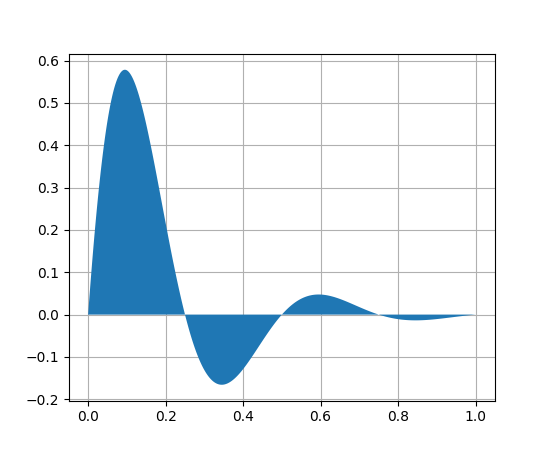

Simple Notebook Example¶
This provides a notebook that demonstrates the different features available in the sphinxcontrib.jupyter extension.
Text will appear as a markdown cell in the notebook split by code-blocks.
To add a code block you can use code-block directives such as:
print("This is a python cell from simple_example.rst")
"""
==================
A simple Fill plot
==================
This example showcases the most basic fill plot a user can do with matplotlib.
"""
import numpy as np
import matplotlib.pyplot as plt
x = np.linspace(0, 1, 500)
y = np.sin(4 * np.pi * x) * np.exp(-5 * x)
fig, ax = plt.subplots()
ax.fill(x, y, zorder=10)
ax.grid(True, zorder=5)
plt.show()
Figures can be include using the figure directive

Math¶
Math will flow through to the Jupyter notebook and will be rendered in place by mathjax
\[\begin{split}\mathbb P\{z = v \mid x \}
= \begin{cases}
f_0(v) & \mbox{if } x = x_0, \\
f_1(v) & \mbox{if } x = x_1
\end{cases}\end{split}\]
Tables¶
The extension supports the conversion of simple rst tables.
Header 1 |
Header 2 |
Header 3 |
|---|---|---|
body row 1 |
column 2 |
column 3 |
body row 2 |
column 2 |
column 3 |